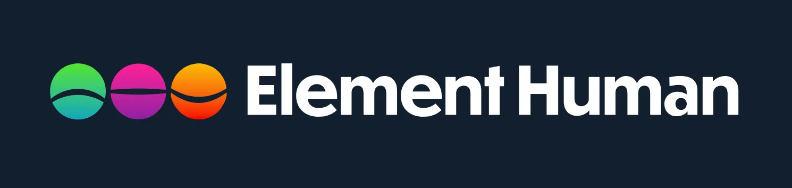
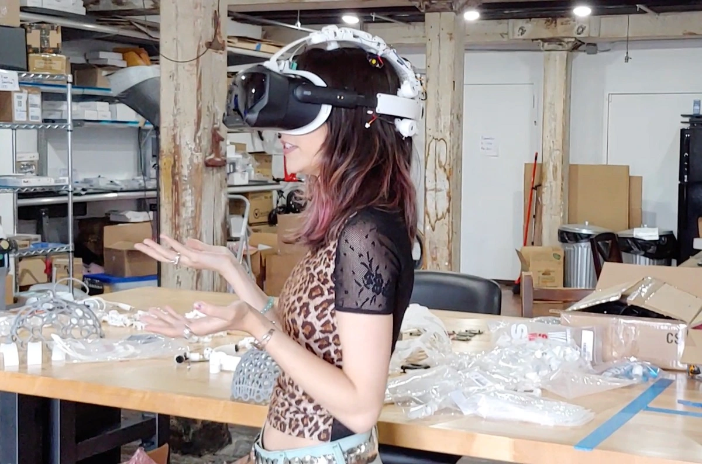

Estado del arte
Automovilismo
En el sector del automovilismo está pasando por uno de los mayores auges en implementación de sensores biométricos para la mejora de la seguridad de los pasajeros. Esta tecnología fue pionera por Emotion navigation, una empresa emergente nacida del propio MIT que utiliza información emocional del usuario para informar y recomendar al conductor formas de mejorar su seguridad al volante.
Emotion navigation y similares utilizan diferentes sensores como eyetrackers, cámaras con capacidad de detectar expresiones faciales y movimientos para detectar el estado anímico y físico del conductor. De esta manera, este sistema detecta si un conductor está bajo los efectos del alcohol, siente fatiga u otros estados que puedan afectar a la eficiencia al volante.
Esta tecnología se muestra bastante prometedora porque se centra en detectar respuestas fisiológicas más que en el propio estado emocional, siendo así un sistema bastante preciso. Está atrayendo a colaboradores en la industria como Hyundai, Audio, Volvo o Jaguar.
Se han visto algunos prototipos de esta tecnología, pero aún no hay productos comerciales disponibles para usuarios.
Recursos Humanos
Pepper es un robot fabricado por SoftBank con el objetivo de automatizar una gran variedad de funciones de recursos humanos. Junto otras grandes empresas se están empezando a implementar algoritmos de análisis semántico y análisis de reconocimiento de emociones a través de tonos de voz con el objetivo de encontrar el perfil más adecuado para cada puesto.
En los últimos años. Han aparecido propuestas como Pepper y similares que tiene como objetivo, por ejemplo, automatizar las fases iniciales de la contratación de trabajadores a través de la creación de perfiles aptos para ciertos puestos basados en aptitudes. Pepper, aunque con poco éxito, tiene la capacidad de analizar currículums, así como filtrarlos, hacer una criba inicial y programar vía telefónica las primeras entrevistas. Aunque el potencial era alto, el funcionamiento era muy rudimentario y poco sofisticado, por lo que Softbank, la empresa creadora de Pepper, ha dejado el proyecto paralizado.
Estas tecnologías están siendo recuperadas por otras empresas del sector como Google con Google dúplex. Este sistema utiliza tecnología similar a la de Pepper para ayudar a los usuarios a pedir citas con establecimientos como una peluquería. Por ahora esta tecnología solo se está utilizando en algunos mercados.

Seguridad
Aunque el ámbito de la seguridad no tiene un foco tan alto en affective computing sí que está nutriendo de una gran cantidad de investigación relacionada con reconocimiento facial, gestos o emociones.
Han aparecido algunas iniciativas militares que utilizan estas tecnologías con el objetivo de vigilancia civil o detección de mentiras. Por ahora la información que estos sectores proporcionan es poco transparente y difícil de obtener, aun así, ya se ha demostrado interés y es un segmento que puede tener mucha más importancia en un futuro.
Medicina
La medicina por ahora está siendo la mayor beneficiada con múltiples proyectos ya funcionando.
Muchas de las tecnologías como EGG ya provienen de la medicina, por lo que ha sido solo natural la implantación de affective computing en muchas de estas tecnologías.
Por un lado, tenemos una parte más comercial con compañías como Apple o Microsoft que están haciendo un énfasis importante en deporte y salud utilizando wearables. Muchas de estas iniciativas se centran alrededor de la captación biométrica de diferentes impulsos para dar datos sobre sueño, estrés. Algunas de estas informaciones son acompañadas de consejos para la autorregulación de las emociones, ejercicio fisico o ejercicios de respiración. Algunos proyectos más ambiciosos se han presentado como el diagnóstico de depresión por parte de Apple usando hardware del Apple watch. Amazon halo analiza tu día a día a través de la grabación de conversaciones y ruido ambiente. Las aplicaciones a nivel más comercial son bastante limitadas y ofrecen resultados poco precisos.
A un nivel más profesional se han desarrollado varios wearables y sistemas capaces de la monitorización con GSR, ritmo cardíaco… para hacer diagnósticos más precisos que son enviados a médicos, psicólogos o pediatras.
Muchas de estas iniciativas se centran en el diagnóstico a través de expresiones faciales y de voz para observar cambios en el estado de ánimo relacionados con problemas de salud.
Los serius games también se han introducido como terapia para niños dentro del espectro autista con el objetivo de aprender a regular sus emociones.
Finalmente, y más importante, el uso de estas tecnologías para el tratamiento o ayuda de personas con trastornos psicológicos como PTSD, depresión o ansiedad son bastante comunes. Permiten, por un lado, proporcionar más información a los psicólogos o poder proporcionar ayuda en el momento en que los usuarios estén bajo una crisis en tiempo real.
Marketing
Un ámbito con bastante potencial es el área de marketing y el product placement. Ya en varias empresas se utilizan input biométrico para analizar la respuesta de los usuarios sobre ciertos productos o anuncios. Hoy en día es una de las áreas con más potencial, habiendo varias empresas como Element human que hacen uso de estas tecnologías bajo focus groups para analizar sus respuestas.
Aunque esta área muestra un gran potencial también alza varias alertas sobre como de ético es el uso de estas tecnologías. Preocupaciones en privacidad, manipulación del mercado o sistemas abusivos que tengan como objetivo a personas vulnerables son temas recurrentes en este ámbito Con una información del usuario más completa tiene el potencial de ayudar en estas tareas. Estos sistemas están en un estado temprano y aún no suponen una amenaza real, pero claramente son elementos para considerar.

Entretenimiento
En entretenimiento hay dos frentes principales en cómo se introduce esta información emocional.
Por un lado, se hace uso de la información emocional como control del producto de entretenimiento. Esto puede implicar la monitorización de los usuarios a través del visionado de una película con el objetivo de observar sus respuestas a diferentes escenas.
El segundo y que está cobrando más interés en la rama de los videojuegos es el contenido adaptativo en función del estado emocional. Esto puede tener grandes implicaciones a causa de obtener una mayor inmersión en los juegos.
Videojuegos
En el ámbito de los videojuegos la computación afectiva se encuentra en muchos puntos. Por un lado, tenemos los estudios de UX que a través de pruebas se analiza cómo el juego está siendo percibido por los jugadores para así, a posteriori, mejorar la experiencia. Las áreas que abarca pueden ir desde el propio diseño de juego a como los elementos visuales se muestran en pantalla.
Aun así, los videojuegos tienen un largo historial de uso de distintos tipos de inputs dentro del juego. Los Wiimotes que son capaces de seguir el movimiento de los brazos o el más sofisticado Kinect, capaz de captar postura y expresiones faciales.
Una de las mayores propuestas de computación afectiva fue el juego de Peter Molyneux, se trataba de interactuar con un niño que era capaz de entender tus emociones a través de los datos obtenidos por Kinect. Aunque este proyecto nunca se llegó a realizar, sí que fue una idea que causó mucho revuelo e interés.
Mirando la actualidad se puede ver el crecimiento de la VR y del metaverso. Algunas de las empresas como Meta o Valve ya han mostrado su interés de añadir estas tecnologías de una forma u otra.
En Valve se está utilizando un EGG de OpenBCI para captar información del usuario con el objetivo de adaptar desde la dificultad, el ritmo o incluso las recompensas de los usuarios. Se han podido ver prototipos ya funcionales de adaptación de dificultad usando estos parámetros, aunque no están preparados para el gran público, tienen potencial a futuro. Parte de la VR viene de la inmersión de los jugadores en estos juegos y las emociones son una puerta hacia esa dirección.

Educación
Con la pandemia de COVID19 y los confinamientos domiciliarios, varias investigaciones han tomado popularidad en la introducción de estas tecnologías dentro de la educación. La educación remota ha sido la forma principal por la que se han podido probar como se podría adaptar la enseñanza utilizando el affective computing. Lo que se ha probado es el uso de cámaras para observar el estado anímico y de motivación de los estudiantes. Estos datos eran dados al profesor que era capaz de ver a través de una pantalla de monitoreo el estado de sus alumnos. Esta información da la posibilidad de mostrar la frustración de los estudiantes o el aburrimiento, ofreciendo alternativas para mejorar su enseñanza.